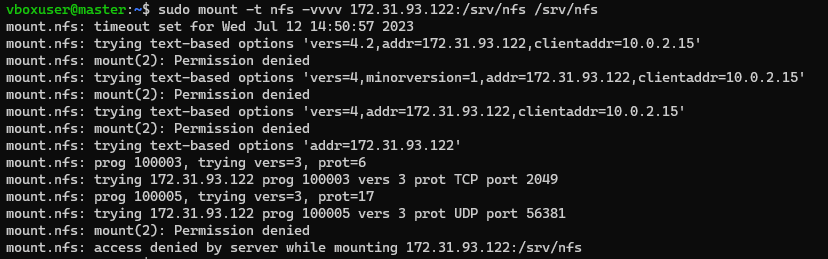
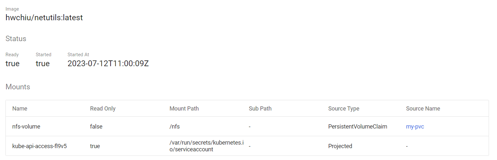
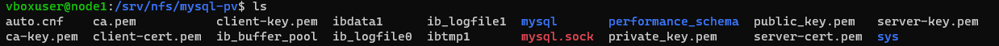

NFS
Use NFS for Persistent Volumes
- https://microk8s.io/docs/nfs
1. Setup an NFS server
假設在 192.168.0.16 架設 NFS server
sudo apt update
sudo apt-get install nfs-kernel-server
Create a directory to be used for NFS:
sudo mkdir -p /srv/nfs
sudo chown nobody:nogroup /srv/nfs
sudo chmod 0777 /srv/nfs
Edit the /etc/exports file. Make sure that the IP addresses of all your MicroK8s nodes are able to mount this share. For example, to allow all IP addresses in the 10.0.0.0/24 subnet
sudo mv /etc/exports /etc/exports.bak
echo '/srv/nfs 192.168.0.0/24(rw,sync,no_subtree_check,no_root_squash)' | sudo tee /etc/exports
重啟
sudo systemctl restart nfs-kernel-server.service
確認 NFS Server是否正常啟動
sudo systemctl status nfs-kernel-server.service
或是可以使用 showmount 命令來檢查 NFS Server 開出來的目錄
showmount -e 192.168.0.16

1-1. NFS Client (可選，作為測試用)
使用 apt 命令進行安裝 NFS Client
sudo apt update
sudo apt install nfs-common
使用 showmount 命令檢查 NFS Server 可連線的目錄
showmount -e 192.168.0.16
---output---
Export list for 192.168.0.16:
/srv/nfs 192.168.0.0/24
如果出現堵塞現象(Stuck)，可能原因為 NFS Server 的防火牆導致，只要關掉防火牆即可(sudo ufw disable)。
建立掛載用目錄，並將 NFS Server 的目錄掛載至本機目錄
sudo mkdir /srv/nfs
sudo mount 192.168.0.16:/srv/nfs /srv/nfs
如果出現 mount.nfs: access denied by server while mounting 192.168.0.16:/srv/nfs 問題，可以先透過
sudo mount -t nfs -vvvv 192.168.0.16:/srv/nfs /srv/nfs
查看詳細資訊。

測試：
登入 ssh vboxuser@192.168.17 # NFS Client 登入 ssh vboxuser@192.168.16 # NFS Server 因為 NFS Client 將本機的 /srv/nfs 資料夾，綁定在 NFS Server 的 /srv/nfs 資料夾 資料夾中，所以兩者資料夾會同步。
先在 NFS Client 執行以下命令
touch /srv/nfs/123.txt
ls
再去 NFS Server 執行以下命令，就會看到 123.txt 檔案了
cd /srv/nfs
ls

2.Install the CSI driver for NFS
3.Create a StorageClass for NFS & Create a new PVC
# sc-nfs.yaml
---
apiVersion: storage.k8s.io/v1
kind: StorageClass
metadata:
name: nfs-csi
provisioner: nfs.csi.k8s.io
parameters:
server: 192.168.0.16
share: /srv/nfs
reclaimPolicy: Delete
volumeBindingMode: Immediate
mountOptions:
- hard
- nfsvers=4.1
microk8s kubectl apply -f - < sc-nfs.yaml
# pvc-nfs.yaml
---
apiVersion: v1
kind: PersistentVolumeClaim
metadata:
name: my-pvc
spec:
storageClassName: nfs-csi
accessModes: [ReadWriteOnce]
resources:
requests:
storage: 5Gi
microk8s kubectl apply -f - < pvc-nfs.yaml
microk8s kubectl describe pvc my-pvc
4. 測試 Pod
apiVersion: v1
kind: Pod
metadata:
name: hwchiu
labels:
app: hwchiu
spec:
containers:
- name: busybox
image: hwchiu/netutils:latest
volumeMounts:
- name: nfs-volume
mountPath: /nfs
volumes:
- name: nfs-volume
persistentVolumeClaim:
claimName: my-pvc
進入Pod
kubectl exec -it hwchiu -n nfs-demo -- /bin/bash
ls # 看看有沒有剛剛建立的 456.txt

以下是這個 Pod 的 Volume 完整資訊

pvc 資訊
pv 資訊

5. MySQL + NFS
kubectl create namespace kube-demo
kubectl create secret generic mysql-pass --from-literal=password=password321 -n kube-demo
PV、PVC
apiVersion: v1
kind: PersistentVolume
metadata:
name: mysql-pv
labels:
pv: mysql-pv
spec:
storageClassName: nfs-csi
capacity:
storage: 15Gi
accessModes:
- ReadWriteMany
persistentVolumeReclaimPolicy: Recycle
nfs:
path: /srv/nfs/mysql-pv
server: 192.168.0.16
---
apiVersion: v1
kind: PersistentVolumeClaim
metadata:
name: mysql-pvc
spec:
storageClassName: "nfs-csi"
accessModes:
- ReadWriteMany
resources:
requests:
storage: 10Gi
selector:
matchLabels:
pv: mysql-pv


Deployment
apiVersion: v1
kind: Service
metadata:
name: mysql
spec:
selector:
app: mysql
ports:
- protocol: TCP
port: 3306
targetPort: 3306
nodePort: 31306
type: NodePort
---
apiVersion: apps/v1
kind: Deployment
metadata:
name: mysql
labels:
app: mysql-test
spec:
replicas: 1
selector:
matchLabels:
app: mysql
template:
metadata:
labels:
app: mysql
spec:
nodeName: node
containers:
- name: mysql-test
image: mysql:5.7
env:
- name: MYSQL_ROOT_PASSWORD
valueFrom:
secretKeyRef:
name: mysql-pass
key: password
ports:
- containerPort: 3306
volumeMounts:
- mountPath: "/var/lib/mysql"
name: mysql-data
volumes:
- name: mysql-data
persistentVolumeClaim:
claimName: mysql-pvc

P.S：
如果一直 Pending ，甚至出現 CrashLoopBackOff 的訊息，可以執行
kubectl logs mysql-848b44f4c5-kgdzc -n kube-demo
看看哪裡出錯。

可參考 https://blog.csdn.net/m0_46090675/article/details/122276216 解決此問題。
最後就會成功了~~~
首先檢查 NFS Server 的檔案中是否有 mysql 的相關資料

進入 Pod 的命令列中，查看 Mysql 相關資訊
kubectl exec -it mysql-5b46fb64b4-t2m4c -n kube-demo -- /bin/bash